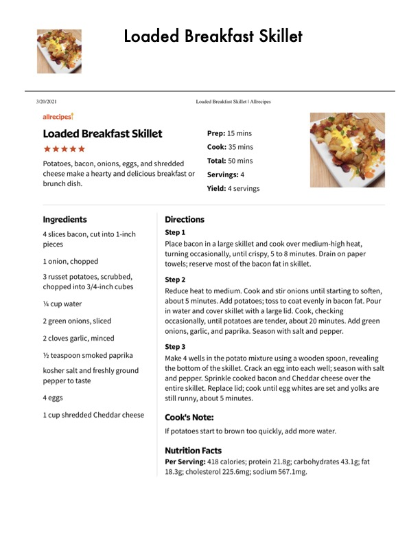

Loaded Breakfast Skillet

Original cookbook page 159
Potatoes, bacon, onions, eggs, and shredded cheese make a hearty and delicious breakfast or brunch dish.
Prep: 15 mins • Cook: 35 mins • Total: 50 mins
Ingredients
- 4 slices bacon, cut into 1-inch pieces
- 1 onion, chopped
- 3 russet potatoes, scrubbed, chopped into 3/4-inch cubes
- 1/4 cup water
- 2 green onions, sliced
- 2 cloves garlic, minced
- 1/2 teaspoon smoked paprika
- kosher salt and freshly ground pepper to taste
- 4 eggs
- 1 cup shredded Cheddar cheese
Instructions
- Place bacon in a large skillet and cook over medium-high heat, turning occasionally, until crispy, 5 to 8 minutes. Drain on paper towels; reserve most of the bacon fat in skillet.
- Reduce heat to medium. Cook and stir onions until starting to soften, about 5 minutes. Add potatoes; toss to coat evenly in bacon fat. Pour in water and cover skillet with a large lid. Cook, checking occasionally, until potatoes are tender, about 20 minutes. Add green onions, garlic, and paprika. Season with salt and pepper.
- Make 4 wells in the potato mixture using a wooden spoon, revealing the bottom of the skillet. Crack an egg into each well; season with salt and pepper. Sprinkle cooked bacon and Cheddar cheese over the entire skillet. Replace lid; cook until egg whites are set and yolks are still runny, about 5 minutes.
Recipe #159 from collection